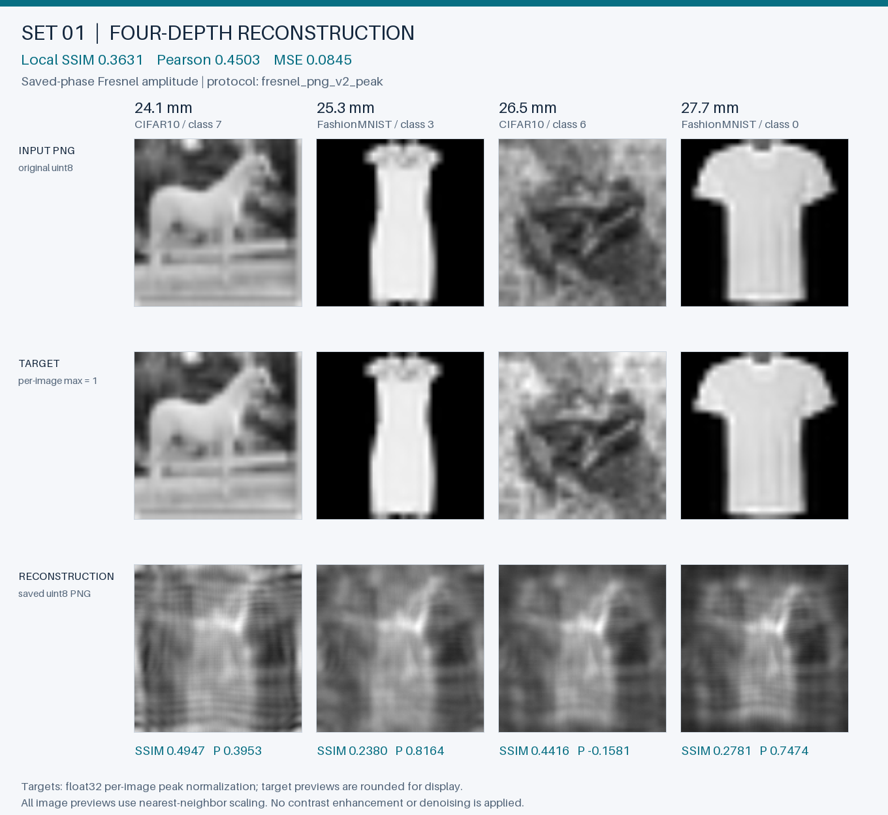
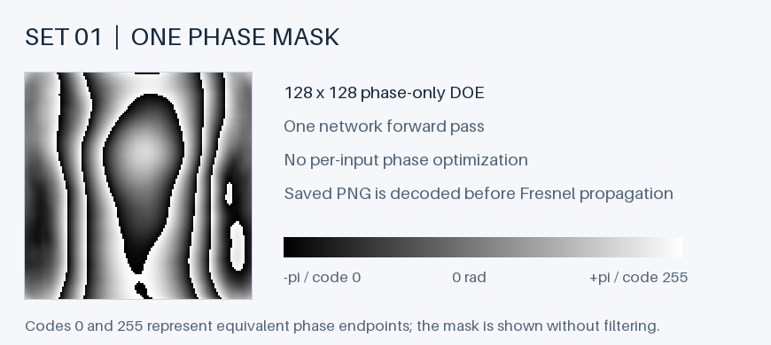
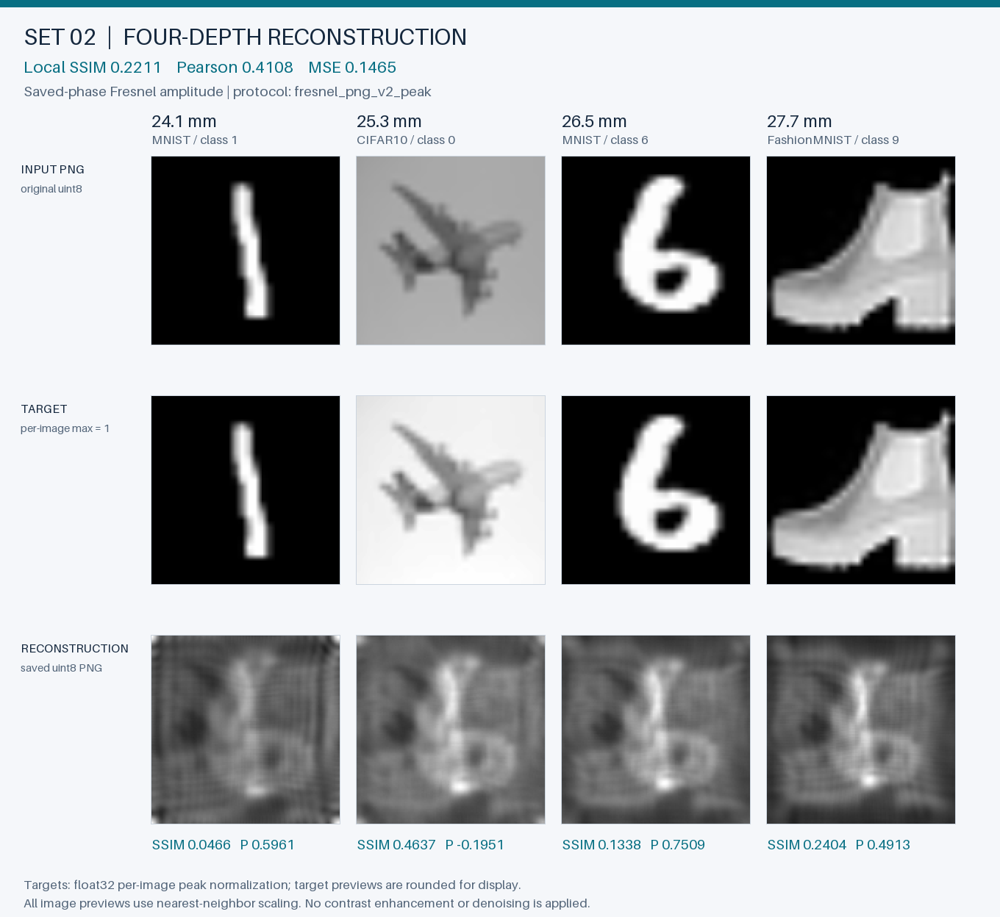
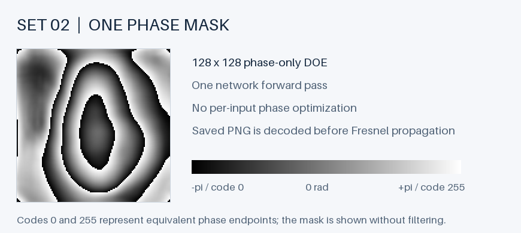
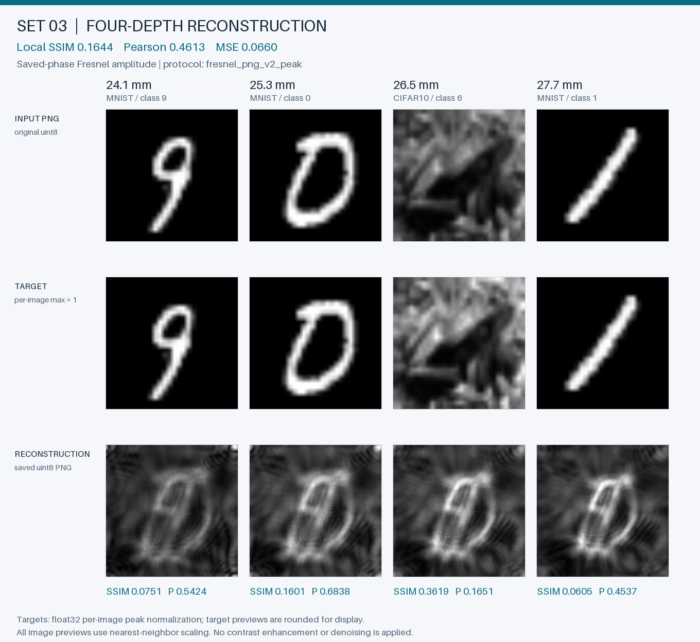
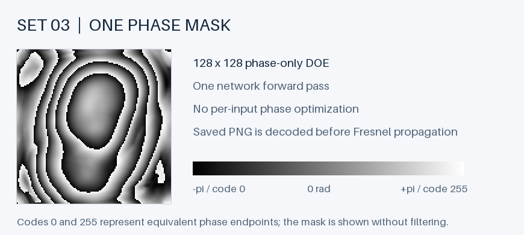
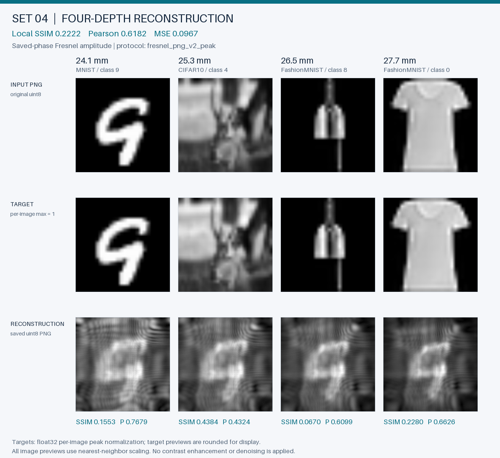
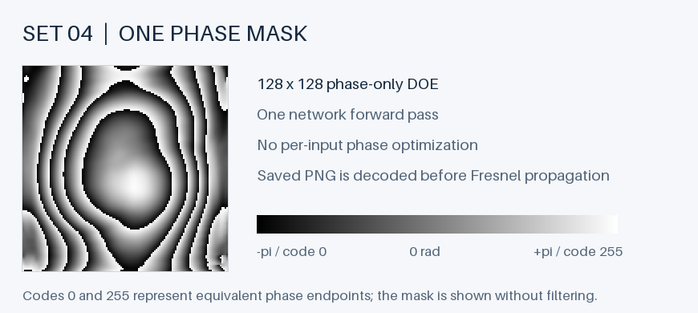
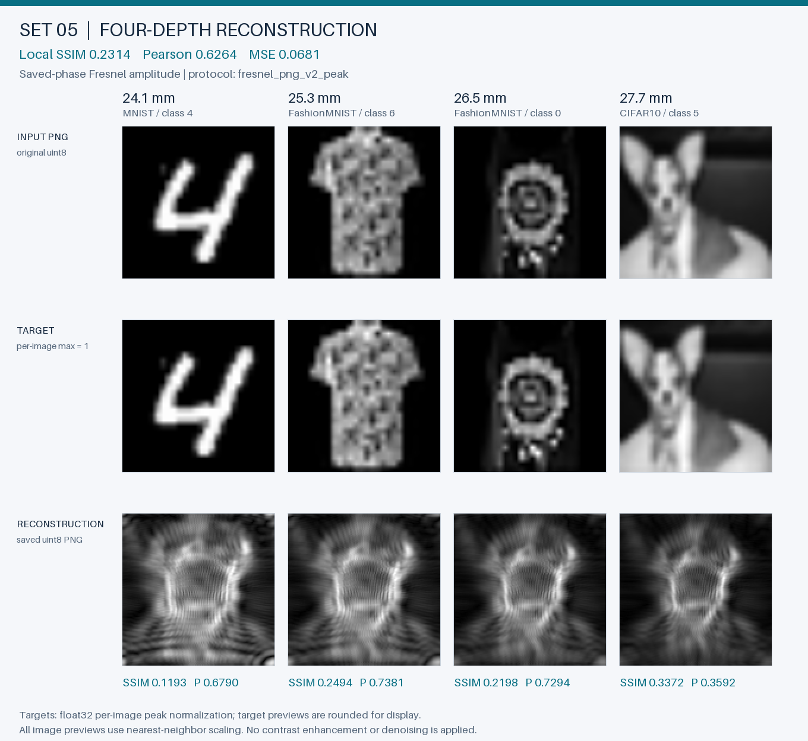
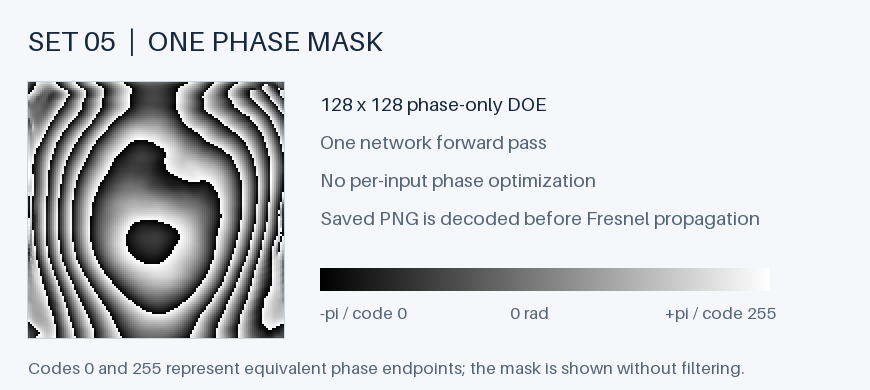

Four targets.
One phase mask.
Five fixed quartets, reconstructed at four depths from one neural prediction per quartet. Every phase mask and reconstruction is available as the original 128 × 128 grayscale PNG.
Fixed examples, explicit provenance
First five existing mixed selection-validation quartets with four distinct (dataset, class) pairs; no model scores used. These examples belong to selection validation, which informed model development. Their scores are descriptive demonstrations, not an independent held-out test estimate. Every predefined set is shown in order.
Each target and reconstructed amplitude is normalized by its own maximum; zero images stay zero. Reconstruction uses amplitude |E|, not intensity. The saved 8-bit phase PNG is decoded before Fresnel propagation, and reconstruction PNGs are read back before scoring. Local SSIM uses an 11 × 11 Gaussian window, sigma 1.5, valid crop. Undefined Pearson values remain explicit.
Source manifest SHA-256: ce3c032e4ca3470815f052a929b5e03fbb5c8b1e6d5f4408eaeb00ead1e0d432
Checkpoint SHA-256: 803a8039f0173d6b85db10c108a8ea91eaeacc5e71e6ecb5604e0ee7e91918b5
Model: transport_spatial_complex · selected step 5000 · protocol fresnel_png_v2_peak
input provenance and hashes · aggregate metrics and environment
Set 01
Mean local SSIM 0.3631 · Pearson 0.4503

The first row preserves original PNG values; the second shows peak-normalized targets. Reconstruction previews use the actual saved PNGs. Metrics compare those reconstructions with float32 targets, without rounding the normalized target for evaluation.


| Plane | Depth | SSIM | Pearson | MSE |
|---|---|---|---|---|
| 1 | 24.1 mm | 0.4947 | 0.3953 | 0.0444 |
| 2 | 25.3 mm | 0.2380 | 0.8164 | 0.1186 |
| 3 | 26.5 mm | 0.4416 | -0.1581 | 0.0789 |
| 4 | 27.7 mm | 0.2781 | 0.7474 | 0.0960 |
Original PNGs: input 1 · input 2 · input 3 · input 4
Reconstructions: plane 1 · plane 2 · plane 3 · plane 4
phase mask · all metrics + hashes


Set 02
Mean local SSIM 0.2211 · Pearson 0.4108

The first row preserves original PNG values; the second shows peak-normalized targets. Reconstruction previews use the actual saved PNGs. Metrics compare those reconstructions with float32 targets, without rounding the normalized target for evaluation.


| Plane | Depth | SSIM | Pearson | MSE |
|---|---|---|---|---|
| 1 | 24.1 mm | 0.0466 | 0.5961 | 0.1258 |
| 2 | 25.3 mm | 0.4637 | -0.1951 | 0.2313 |
| 3 | 26.5 mm | 0.1338 | 0.7509 | 0.1217 |
| 4 | 27.7 mm | 0.2404 | 0.4913 | 0.1074 |
Original PNGs: input 1 · input 2 · input 3 · input 4
Reconstructions: plane 1 · plane 2 · plane 3 · plane 4
phase mask · all metrics + hashes


Set 03
Mean local SSIM 0.1644 · Pearson 0.4613

The first row preserves original PNG values; the second shows peak-normalized targets. Reconstruction previews use the actual saved PNGs. Metrics compare those reconstructions with float32 targets, without rounding the normalized target for evaluation.


| Plane | Depth | SSIM | Pearson | MSE |
|---|---|---|---|---|
| 1 | 24.1 mm | 0.0751 | 0.5424 | 0.0545 |
| 2 | 25.3 mm | 0.1601 | 0.6838 | 0.0656 |
| 3 | 26.5 mm | 0.3619 | 0.1651 | 0.0675 |
| 4 | 27.7 mm | 0.0605 | 0.4537 | 0.0764 |
Original PNGs: input 1 · input 2 · input 3 · input 4
Reconstructions: plane 1 · plane 2 · plane 3 · plane 4
phase mask · all metrics + hashes


Set 04
Mean local SSIM 0.2222 · Pearson 0.6182

The first row preserves original PNG values; the second shows peak-normalized targets. Reconstruction previews use the actual saved PNGs. Metrics compare those reconstructions with float32 targets, without rounding the normalized target for evaluation.


| Plane | Depth | SSIM | Pearson | MSE |
|---|---|---|---|---|
| 1 | 24.1 mm | 0.1553 | 0.7679 | 0.1245 |
| 2 | 25.3 mm | 0.4384 | 0.4324 | 0.0592 |
| 3 | 26.5 mm | 0.0670 | 0.6099 | 0.1008 |
| 4 | 27.7 mm | 0.2280 | 0.6626 | 0.1024 |
Original PNGs: input 1 · input 2 · input 3 · input 4
Reconstructions: plane 1 · plane 2 · plane 3 · plane 4
phase mask · all metrics + hashes


Set 05
Mean local SSIM 0.2314 · Pearson 0.6264

The first row preserves original PNG values; the second shows peak-normalized targets. Reconstruction previews use the actual saved PNGs. Metrics compare those reconstructions with float32 targets, without rounding the normalized target for evaluation.


| Plane | Depth | SSIM | Pearson | MSE |
|---|---|---|---|---|
| 1 | 24.1 mm | 0.1193 | 0.6790 | 0.0952 |
| 2 | 25.3 mm | 0.2494 | 0.7381 | 0.0368 |
| 3 | 26.5 mm | 0.2198 | 0.7294 | 0.0387 |
| 4 | 27.7 mm | 0.3372 | 0.3592 | 0.1016 |
Original PNGs: input 1 · input 2 · input 3 · input 4
Reconstructions: plane 1 · plane 2 · plane 3 · plane 4
phase mask · all metrics + hashes